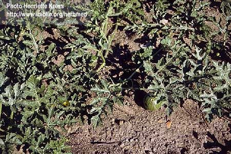

Cucumis melo
L.
Taxonomic Details

----- Correct Name
----- Classification
----- Synonyms
----- Common Names
Other Biological Details
----- Habit and Habitat
----- Diagnostic Features
----- Reproductive Biology
---------- Breeding System
---------- Phenology
---------- Pollinators
---------- Seed Biology
----------Seed
Germination
------ Cultivation
----- Major Pests and Diseases
Economic Potential and Uses
----- Parts Used
-----Uses
----- Harvesting Practices
----- Produce and Products
----- Chemistry
----- Processing Techniques
----- Other uses
----- Economic Potential to the Country
----- Export Potential
Miscellaneous Information
Literature
Taxonomic
Details
Correct Name
:Cucumis melo L.

Family : Cucurbitaceae
Synonyms :
Common Names :
English: Muskmelon, Cantaloupe, melon, casaba, winter melon, The sweet melon
Hindi: Karbbooja, Khurbuj
Bengali: Kharmuj
Tamil: Mulam puzham, Vellari-verai
Telugu: Karbbooja
Kannada: Karbooja
Marati: Karbbooja
Back to Top
Other
Biological Details
HABIT & HABITAT

It is trailing herbaceous vines, and is said to be a native
of tropical Africa more specifically in the eastern region, south of Sahara Desert,
central Asia comprising some parts of southern Russia, Iran, Afganistan, Pakistan
and Northwest India may be regarded as a secondary centre of muskmelon. The huge
diversity of this polymorphic species C. melo has been recognized as a complex
of cultigenic species with free intercrossing possible. In fact Russian botanists
have raised C. melo to genetic status of Melo sp. retaining cucumber under Cucumis.
According to them, no African wild species could be suspected to be an ancestor
of the cultivated or wild melons. But studies conducted on alloenzyme variation
on wild and cultivated species of Cucumis totalling 21, it is suggested India
rather than Africa, is the centre of origin of cultivated melons. On the basis
of extensive cytogenetical studies of 43 wild species from South, East and West
Africa, consisting of annuals and perennials diploids, tetraploids and hexaploid,
however, South Africa is considered to be the primary gene centre of the genus.
Availability :
Status :
Back to Top
DIAGNOSTIC FEATURES

Muskmelon vines have palmate leaves.
And is a large polymorphic species encompassing a large number of botanical
and horticultural varieties. Their leaves are light green or medium green and
the fruit surface is usually smooth. The Mature fruits of muskmelon (Cucumis
melo L., cantaloupe, melon, muskmelon, casaba, winter melon) are round in shape
and 8-16cm in diameter. Nevertheless some oblong, flat and oval fruit shaped
varieties are also available.
Back to Top
REPRODUCTIVE BIOLOGY
Breeding System :
A mostly andromonoecious sex form is common in most of the varieties grown in
India. Male flowers appear first as a cluster on main and secondary branches,
but hermaphroditic flowers appear alone on secondary branches. Diploid or tetraploid.
Phenology :
The number of fruits to develop per vine
ranges from one to several.
Pollinators:
Insects and bees.
Seed Biology :
The shape of the ovary varies from ovoid to elongated. After pollination, the
ovary wall rapidly expands and develops into pericarp with an exocarp, mesocarp,
and endocarp. The edible portion in mostly mesocarp. Muskmelon seeds are creamish
in color and retain their viability for nearly 5 years.
Seed Germination:
Seed propagation is commercially used for multiplying muskmelon. On average,
one can get up to 85-90% germination. About 3000-3500 seeds can be obtained
from 100 g. the best temperature for seed germination is 23-240C.
Cultivation: It is a warm season crop, susceptable to frost. Average temparature
for growth is 30°-35°. A well drained loamy soil is preferred with 6.0-7.0
pH. It responds well to manuring, 15-20 t/ha FYM is applied to field at the time
of land preparation. Application of N,P and K improves total yield, vegetative
growth, flowering, fruit weight, TSS, vitamin C, dry matter content and mineral
uptake. Pitcher irrigation is effective means of irrigating muskmelon. Application
of growth regulator Ethrel 250 ppm twice at 2-true-leaf stage and 4-true-leaf
stage increases fruiting and inturn yield in muskmelon. Application of silver
thiosulphate 300-400 ppm induces male flower.
Back to Top
MAJOR PESTS & DISEASES
Back to Top
Economic
Potential and Uses
Parts used
Fruits, seeds
Uses
- Fruits eaten fresh out of rind after removal of seeds, as
dessert, sometimes with sugar or powdered ginger.
- Fruits of some cultivars used for preserves or as vegetables.
Seeds edible, chewed. Seeds yield an edible oil. Hausa make fermented cakes
from the seed. Seeds also blended with fruit juices to make a more nutritious
beverage.
- Leaves eaten as a vegetable, in relishes and soups, in Africa.
Leafy trailers and fruits provide good livestock forage. Surplus melons sometimes
converted to molasses and sugar. High in potash, the rind and other residues
have good manure value.They are valued throughout the tropics and sub-tropics,
more so in semi-arid and arid regions. Immature fruits are used as vegetable
and seeds are edible (used also in confectionery). Melon is valued as a summer
fruit. It is having cooling effect on the body, it is dimulscent, diuretic and
aphrodisiac. Roots have emetic and purgative properties.
Harvesting Practices
1. Softening of rind, which can be felt by pressing the rind with hand. Ripening
in muskmelon starts at the blossom end.
2. Change in the color of the base of the pedicel from green to waxy.
3. Ripened fruits have nutty aroma.
4. Formation of abscission layer. If the fruit is in "full slip stage,"
the fruit separates from
the stem easily without much force required, leaving a depression on the stem
end of
fruit. If the abscission layer is not formed or is incomplete, the fruit does
not separate from the stem easily and is said to be in half-slip stage. The
fruit must be picked at "full-slip stage," at which time it will have
good flavor with pulp of excellent color and consistency. Fruits at the half-slip
stage are good for distant markets only. Harvesting is generally done in the
morning.
Careful and prompt post harvest handling of melons
is very important. Rough handling causes bruises, which make fruit more susceptible
to decay. Delay in getting the melons packed and loaded into refrigerator cars
may result in too rapid ripening with consequent loss.
Muskmelons (cantaloupes) are graded in the United States according to USDA specifications
and packed in crates of different sizes.
Produce and Products
Salads , Pickles, Juice, Candy
Back to Top
Chemistry
The fruits contain 0.6% protein, 0.2% fat, 3.5% carbohydrates, 32mg calcium, 14mg
phosphorus, 1.4mg iron, 16mg carotene and 26mg vitamin C per 100g fresh weight
of the fruit.
Back to Top
Processing Techniques
Back to Top
Other Uses
- The molasses mentioned above could be converted to ethanol
as could waste melons and biomass.
- FOLK MEDICINE: According to Hartwell," pastilles made
from the seed and a flour made from the skin are both used stomach tumors.
Additionally, the root, boiled with pinewood, is used for stomach, bladder,
and uterine cancers. The fruit, incorporated into the normal diet, and the
liniment from the seed, are also used for tumors. Reported to be antivinous,
demulcent, digestive, diuretic, emetic, emmanagogue, preventitive (sunstroke),
refrigerant, stomachic, taenifiige, and vermifuge, cantaloupe is a folk remedy
for anasarca, bruise, cancer, cancer (stomach), cold, coryza, cough, diabetes,
dyspepsia, dysuria, eczema, extravasation, gonorrhea, jaundice, menorrhagia,
micturition, oligouria, polypus, stomatitis, and tumors. The seeds and pulp
are diuretic. The pulp is also used for chronic or acute eczema. Roots contain
an emetic principle. Jay the "Juiceman".says without citing all
his sources, that cantaloupe is high in provitamin A and vitamin C as well
as myoinositol, a "lipid that relieves anxiety and insomnia and helps
prevent hardening of the arteries." He says it contains the largest quantity
of digestive enzymes of any fruit, surpassing papayas and mangos.
Back to Top
Economical
Potential to the country
Back to Top
Export Potential
Export potential
India has varied agro-climatic conditions making the cultivation of whole range
of vegetables possible from temperate to tropical regions. There is no proper
survey of the foreign markets taken up about the quality requirements and suroluses
that the country is exporting. Further, no new market has been explored. There
is a need to have research and development activities of export oriented types
in each crop. In 1997-98, the melons are exported in quantity of 3,593mt, which
is valued at Rs 160 lakhs. The fruits exported should have good keeping quality.
Back to Top
Miscellaneous
Information
Back to Top
Literature
- Cucurbitaceous vegetables in Text book of vegetables, Tuber
crops and spices,Edit. S. Thambury and Narendra Singh, Directorate of Information
publication of Agriculture. ICAR, New Delhi, July 2001.pp. 232-253.
- Cucumis melo- A
Dictionary of the Economic products of India, 1889, George Watt, Vol.II, pp.627-630.
- http://www.ibiblio.org/herbmed/pictures/p04/pages/cucumis-melo.htm
- The wealth of India, A Dictionary of Indian Raw Materials
and Industrial Products, Vol. II. C, Publications and Information Directorate,
CSIR, New Delhi, India, 1950.
Back
to Top